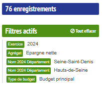
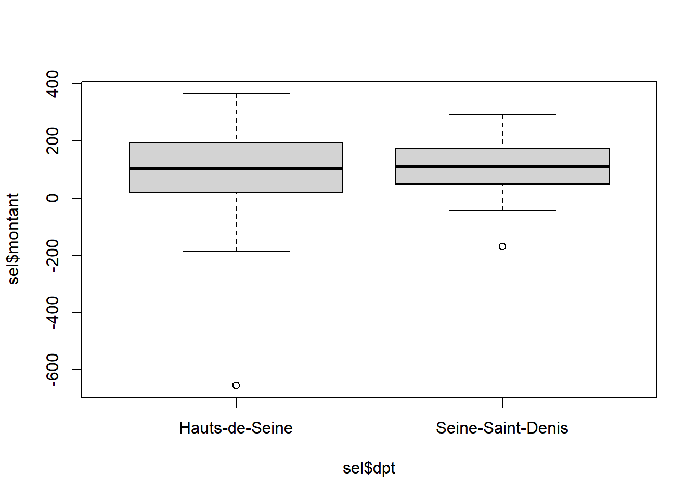
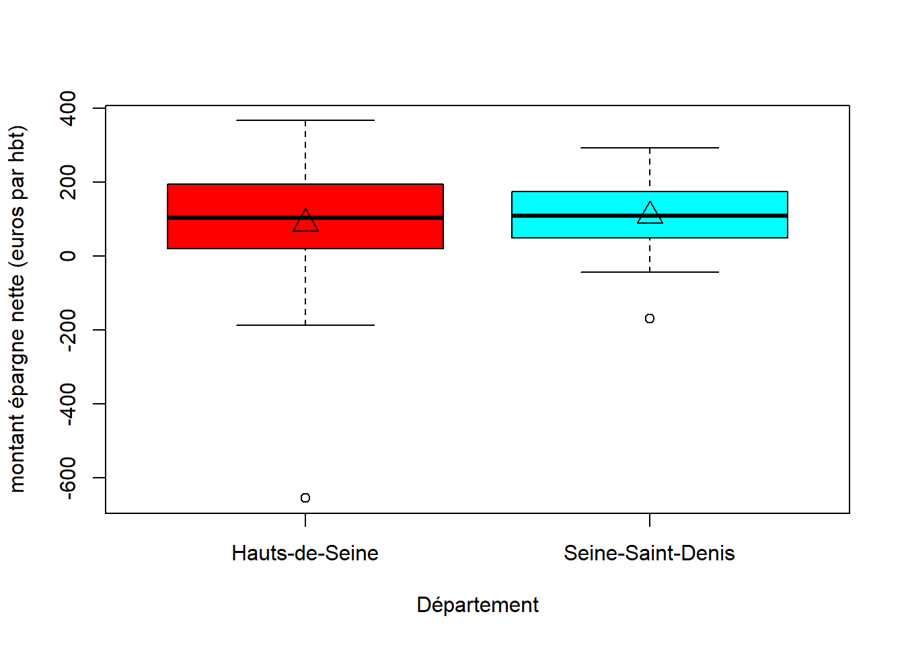
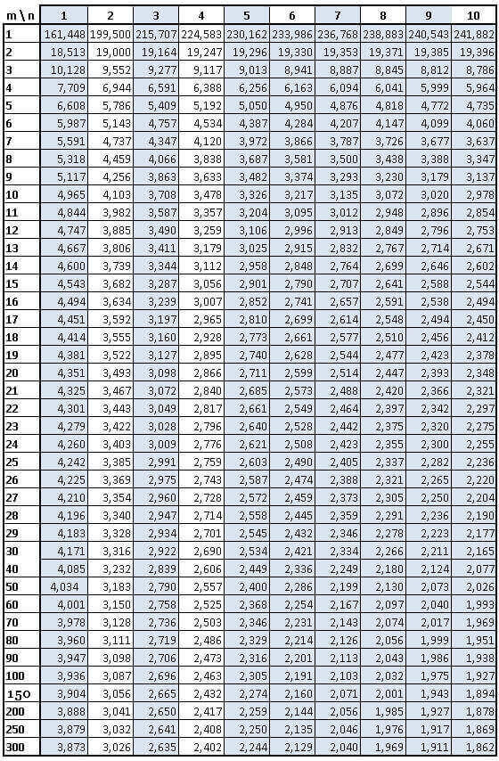
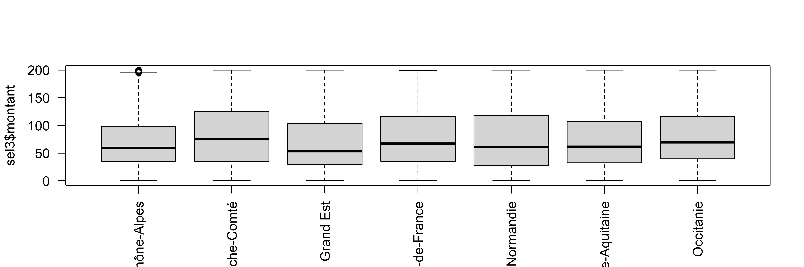

Variance
1 Intro : rappels divers
1.1 Théorie
le khi2, la régression, et la variance
démarche générale
Avec le khi2, on a vu surtout le test et sa significativité.
Avec la régression, on a abordé uniquement le coefficient de corrélation sans montrer le test.
Avec la variance, nous allons aborder test, significativité et intensité.
1.2 Outils
xls ou csv
libre office ou R
2 Donnée et objet de l’exercice
La variance est utilisée en géographie pour tester des groupements spatiaux.
2.1 Hypothèse
Nous allons étudier la relation entre une variable quantitative et une donnée géographique.
R va nous permettre de mettre en place la donnée d’exemple.
2.2 Préparer la donnée
2.2.1 Que faut-il faire ?
Choisir au moins deux entités administratives, pour nous, le 93 et le 92 et observer si l’épargne nette est équivalente.
Il s’agit de l’épargne disponible pour financer l’investissement des collectivités.

2.2.2 Remarques sur R
opérateur d’assignation
les accolades pour l’indexation
le $ pour la variable
la complétion avec tabulation
Parcours du script et exercice moodle pour voir si c’est compris.
2.2.3 Le script
# lecture du fichier. Quelle remarque faire ?
data <- read.csv2("data/variance.csv", fileEncoding = "UTF-8", dec =".")
# on ne conserve que le montant par habitant
names (data)## [1] "Exercice"
## [2] "Outre.mer"
## [3] "Code.Insee.2024.Région"
## [4] "Nom.2024.Région"
## [5] "Code.Insee.2024.Département"
## [6] "Nom.2024.Département"
## [7] "Code.Siren.2024.EPCI"
## [8] "Nom.2024.EPCI"
## [9] "Strate.population.2024"
## [10] "Commune.rurale"
## [11] "Commune.de.montagne"
## [12] "Commune.touristique"
## [13] "Tranche.revenu.par.habitant"
## [14] "Présence.QPV"
## [15] "Code.Insee.2024.Commune"
## [16] "Nom.2024.Commune"
## [17] "Catégorie"
## [18] "Code.Siren.Collectivité"
## [19] "Code.Insee.Collectivité"
## [20] "Siret.Budget"
## [21] "Libellé.Budget"
## [22] "Type.de.budget"
## [23] "Nomenclature"
## [24] "Agrégat"
## [25] "Montant"
## [26] "Montant.en.millions"
## [27] "Population.totale"
## [28] "Montant.en...par.habitant"
## [29] "Compte.2024.Disponible"
## [30] "code_type_budget"
## [31] "ordre_analyse1_section1"
## [32] "ordre_analyse1_section2"
## [33] "ordre_analyse1_section3"
## [34] "ordre_analyse2_section1"
## [35] "ordre_analyse2_section2"
## [36] "ordre_analyse2_section3"
## [37] "ordre_analyse3_section1"
## [38] "ordre_analyse3_section2"
## [39] "ordre_analyse3_section3"
## [40] "ordre_analyse4_section1"
## [41] "annee_join"
## [42] "Population.totale.du.dernier.exercice"# colonnes 6 et 22, 16 pour avoir le nom de la commune
sel <- data [, c(6,28,16)]
# liste des dpts
unique(sel$Nom.2024.Département)## [1] "Hauts-de-Seine" "Seine-Saint-Denis"##
## Hauts-de-Seine Seine-Saint-Denis
## 36 403 Représentation graphique
3.1 La commande boxplot
La boite à moustaches permet de comparer rapidement des distributions. Les moustaches montrent les 1ers et 9e déciles. Les limites des boites correspondent au 1e et 3e quartile Le trait indique la médiane. Les valeurs aberrantes sont les points isolés.

# Un peu de couleur et des titres
boxplot(sel$montant~sel$dpt, xlab ="Département", ylab="montant épargne nette (euros par hbt)",
col=rainbow(2))
# Affichage des moyennes sur les boites à moustache
moyenne <- tapply(sel$montant, sel$dpt, mean)
points(moyenne, pch = 2, col="black", cex = 2)
Ce graphique permet de comparer 2 départements. Les variations entre les groupes sont-elles plus importantes que les variations au sein des groupes eux-mêmes ? A priori, dans le 92, l’amplitude est plus étendue. Les distributions sont très symétriques (la médiane semble au centre de la boite). Il y a autant de communes avec une épargne nette basse qu’avec une épargne dette élevée.
Il existe une très forte valeur négative pour chacun des 2 départements.
## dpt montant commune
## 1 Hauts-de-Seine -9.255591 Antony
## 7 Hauts-de-Seine -96.019408 Châtenay-Malabry
## 8 Hauts-de-Seine -68.760843 Châtillon
## 19 Hauts-de-Seine -41.607404 Levallois-Perret
## 26 Hauts-de-Seine -654.082223 Le Plessis-Robinson
## 29 Hauts-de-Seine -47.983874 Saint-Cloud
## 30 Hauts-de-Seine -187.247043 Sceaux
## 35 Hauts-de-Seine -47.189691 Ville-d'Avray
## 36 Hauts-de-Seine -49.330382 Villeneuve-la-Garenne
## 38 Seine-Saint-Denis -32.902027 Aulnay-sous-Bois
## 43 Seine-Saint-Denis -168.095386 Le Bourget
## 69 Seine-Saint-Denis -43.027696 Saint-Ouen-sur-Seine
## 71 Seine-Saint-Denis -35.108860 StainsLes deux communes sont Le Plessis-Robinson pour le 92 et Le Bourget pour le 93
En fait, pour les Hauts de Seine, cette valeur décentre un peu la moyenne.
Mis à part l’amplitude, les deux départements se ressemblent.
3.2 Correction exercice sur la boite à moustaches
Le but de l’exercice était d’utiliser un filtre permettant de faire une jolie boite à moustaches.
Mais il s’agissait également de faire une rapide analyse en utilisant les noms des variables.
Pour cela, un premier exercice avait été fait en cours sur l’analyse faite en classe. Boîte à moustaches - analyse (26 réponses sur 60 étudiants présents environ)
| exemple | bon | mauvais |
| amplitude | l’étendue des données pour le 92 est beaucoup plus importante que celle du 93. on peut donc dire que le 92 est plus inégalitaire que le 93 concernant les dettes de ses habitants. l’amplitude importante signifie qu’il y a un écart important entre la plus grande dette et la plus faible contrairement au 93 ou elles sont plus rapprochées. | L’amplitude des distributions peut s’évaluer par les limites des premier et neuvième déciles. |
| médiane | la médiane girondine est plus haute que la médiane landaise | La médiane de distribution ce situe au centre de nos données 50% au dessus 50 % en dessous |
| valeur.aberrante | dans le 92, il y a une valeur très fortement aberrante, il n’y a pas d’équivalent dans le 93 | Les valeurs hors des boîtes sont des valeurs aberrantes |
Globalement, les étudiants ont réussi à faire les 2 séries de boites à moustaches (avec et sans filtre).
A noter, des étudiants qui utilisent un histogramme, et un autre qui n’a pas réussi à ouvrir correctement son fichier.
Le commentaire les plus intéressant :
- une opposition entre départements ruraux et département avec une grande métropole.
4 La variance
4.1 Rappel
Pour mémoire, la variance est le carré de la moyenne des écarts à la moyenne.
Dans le tableur, nous aurions fait une série de tableaux de calcul autour des écarts à la moyennes (en mettant des carrés). Dans R, c’est une formule var.
4.2 Calcul de la variance avec et sans la formule
Pour les 2 dpts
## [1] 19742.05## [1] 19482.28Le résultat est légèrement différent, car le logiciel pondère la variance en soustrayant 1 à l’effectif. Plus la série est grande, moins cela a d’importance.
Pour chaque dpt
## Hauts-de-Seine Seine-Saint-Denis
## 32194.767 8874.249La variance est quatre fois plus importante dans le 92 que dans le 93.
5 Analyse de la variance
Attention à bien distinguer la variance de la variation.
La première est la moyenne du carré des écarts, la seconde est juste la somme du carré des écarts.
La variation est une quantité qui se décompose en :
les variations à l’intérieur de chaque groupe (variation intra groupe)
les variations entre les groupes (variation inter groupe)
La variation totale est la somme des deux. La significativité et l’intensité sont calculées avec ces trois grandeurs.
significativité = rapport inter / intra
intensité = rapport inter / total
5.0.1 La formule ANOVA dans R
ANalyse Ordinaire de la VAriance
Sous R, il suffit de lancer une formule.
# transformation en variable de catégorie (une précaution)
sel$dpt <- as.factor(sel$dpt)
modele <- lm (montant ~ dpt, data = sel)
anova(modele)## Analysis of Variance Table
##
## Response: montant
## Df Sum Sq Mean Sq F value Pr(>F)
## dpt 1 7741 7741 0.3889 0.5348
## Residuals 74 1472913 19904Sum Sq = la somme des carrés des écarts (SCE)
Mean Sq = la moyenne des carrés des écarts, c’est la variance sauf qu’au lieu de faire une moyenne classique, on utilise les degrés de liberté pour le dénominateur.
Pour la variation intergroupe, il s’agit du nombre de groupes (dans notre cas, 92 et 93 -1)
Pour la variation intragroupe, l’effectif - le nombre de groupe.
## [1] 74La première ligne (dpt) c’est pour la variation inter-groupe
La deuxième (Residuals) c’est pour l’intérieur des groupes (l’intra)
Que dire ce ces chiffres ?
Comme pour le khi2, on peut faire un test et calculer l’intensité.
5.0.2 Significativité
F value = Test de Fisher, c’est le test de significativité pour l’analyse de la variance.
Le test est mesuré par le rapport entre la variation intergroupe et la variation intragroupe (avec les degrés de liberté).
Si ce rapport est élevé, cela signifie que la variation intergroupe est importante relativement à la variation intra, donc qu’il y a une vraie différence entre les écarts à la moyenne des groupes.
## [1] 0.3889143## [1] 0.3889143 NAPlus la variation intra augmente, plus le rapport diminue, moins il y a de différence entre les groupes.
5.0.2.1 La table de fisher
Comme pour le khi2, on compare à un test obtenu par le hasard (donc une table).
 F calculé
Ftable <- qf(p=.05, df1=1, df2=74, lower.tail=FALSE)
Fcalcule <- test$`Mean Sq` [1] / test$`Mean Sq` [2]
Ftable## [1] 3.97023## [1] 0.3889143Le F théorique est supérieur au F calculé pour un risque de 5 %
Il y a indépendance entre les départements et la distribution du montant de l’épargne nette.
5.0.2.2 Avec R, importance de la p-value
Le chiffre le plus rapide à analyser, c’est la p-value, il indique la taille de la différence entre les moyennes des 2 départements
Plus il est petit, plus il y a de différence, plus il est gros, plus les écarts aux moyennes se ressemblent et donc l’hypothèse d’indépendance peut être rejetée.
C’est la même logique que pour le khi2 (cf exemple khi2 dans l’introduction aux bivariées).
Dans notre cas, la pvalue indique un risque important. Concrètement, il faudrait aller chercher la table du risque à % de Fisher.
## [1] 0.3888919On a plus de 50 % de chance de se tromper si on rejette l’indépendance, il ne faut donc pas la rejeter.
93 92 ont une même répartition de la dette
5.0.3 Intensité
On mesure également l’intensité, la proportion de la variation expliquée par les modalités dans la variation totale (entre 0 et 1)
variation intergroupe / variation totale
## [1] 0.2800132L’intensité est faible, un plus d’un quart de la variation est expliquée par la structure spatiale.
6 Exercices d’application
6.1 Du département à la région
Le choix est fait de comparer les variations de chaque région.
6.1.1 Hypothèse
Il s’agit d’observer s’il y a une variation entre les régions sur l’ensemble du pays au niveau de l’épargne.
L’hypothèse nulle, comme d’habitude, est qu’il n’y en a pas.
6.1.2 Script
## Nom.2024.Région Montant.en...par.habitant
## 1 Hauts-de-France 40.96386
## 2 Hauts-de-France 123.17000
## 3 Auvergne-Rhône-Alpes 60.50586
## 4 Grand Est 101.28546
## 5 Grand Est 145.32277
## 6 Grand Est 51.57234##
## Auvergne-Rhône-Alpes Bourgogne-Franche-Comté
## 4024 3697
## Bretagne Centre-Val de Loire
## 1205 1755
## Corse Grand Est
## 360 5115
## Guadeloupe Guyane
## 32 22
## Hauts-de-France Île-de-France
## 3776 1267
## La Réunion Martinique
## 24 34
## Mayotte Normandie
## 17 2649
## Nouvelle-Aquitaine Occitanie
## 4302 4453
## Pays de la Loire Provence-Alpes-Côte d'Azur
## 1231 945## [1] "Auvergne-Rhône-Alpes" "Bourgogne-Franche-Comté"
## [3] "Grand Est" "Hauts-de-France"
## [5] "Normandie" "Nouvelle-Aquitaine"
## [7] "Occitanie"##
## Auvergne-Rhône-Alpes Bourgogne-Franche-Comté Grand Est
## 4024 3697 5115
## Hauts-de-France Normandie Nouvelle-Aquitaine
## 3776 2649 4302
## Occitanie
## 4453png("img/varianceRegion.png", width = 6000, height = 2000, res = 600)
boxplot(sel$montant~sel$region, las =2)
dev.off()## png
## 2png("img/varianceRegion2.png", width = 6000, height = 2000, res = 600)
boxplot(sel2$montant~sel2$region, las =2)
dev.off()## png
## 2

## Min. 1st Qu. Median Mean 3rd Qu. Max. NA's
## 0.00 36.66 72.27 104.22 135.23 13004.32 6sel3 <- sel2 [sel2$montant < 200 & sel2$montant > - 200,]
png("img/varianceRegion3.png", width = 6000, height = 2000, res = 600)
boxplot(sel3$montant~sel3$region, las=2, xlab = "")
dev.off()## png
## 2
## Analysis of Variance Table
##
## Response: montant
## Df Sum Sq Mean Sq F value Pr(>F)
## region 6 6927580 1154597 30.661 < 2.2e-16 ***
## Residuals 28003 1054498739 37657
## ---
## Signif. codes: 0 '***' 0.001 '**' 0.01 '*' 0.05 '.' 0.1 ' ' 1## [1] 0.9684156L’échelon régional permet d’expliquer 96% de la variation de la dette, mais pas celui de département. (Mais on a conservé uniquement les valeurs entre -200 et 200)
L5GEABIM Analyses bivariées et multivariées